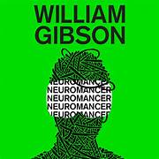
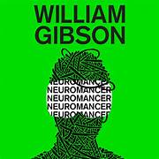

MUST TRY BOOKS
 

Dune by Frank Herbert
Description: As mentioned earlier, Dune is a masterpiece set in the distant future. It follows the story of Paul Atreides, whose family is entrusted with the desert planet Arrakis, the only source of the vital spice melange. The novel explores themes like politics, power, religion, and ecology, and is known for its intricate world-building and philosophical depth.
"Listen to the Audiobook"Ender's Game by Orson Scott Card
Description: Ender’s Game tells the story of Ender Wiggin, a young boy who is recruited into a military training academy to prepare for an interstellar war against a mysterious alien species known as the "Buggers." The book explores themes of leadership, morality, and the psychological toll of war. It has a gripping plot and twists that keep readers on the edge of their seats.
"Listen to the Audiobook"The Left Hand of Darkness by Ursula K. Le Guin
Description: Set on the planet Gethen, where the inhabitants can change gender, The Left Hand of Darkness explores themes of gender, society, and politics. The novel follows Genly Ai, a human envoy from another planet, as he tries to convince the leaders of Gethen to join an interplanetary alliance. The book is known for its exploration of human relationships and the complexities of gender.
"Listen to the Audiobook"Neuromancer by William Gibson
Description: Neuromancer is a pioneering work in the cyberpunk subgenre of science fiction. It follows the story of Case, a washed-up computer hacker who is hired by a mysterious employer to hack into a powerful AI. The novel introduces the concept of cyberspace and virtual reality, and its exploration of artificial intelligence and human consciousness has influenced countless works of sci-fi.
"Listen to the Audiobook"